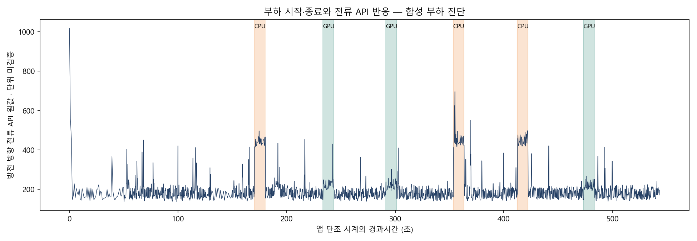
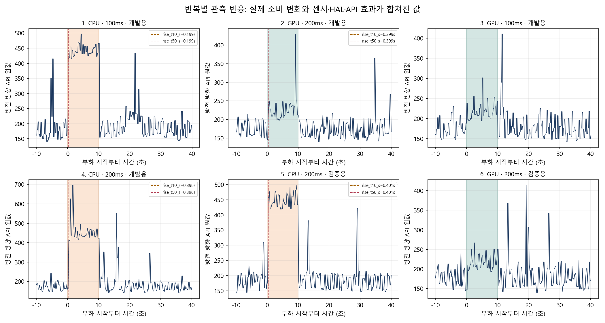

별도 합성CPU·GPU 부하 / 순수 센서 지연·전류 단위·절대J 검증이 아닙니다. 시간 보정 적용0. 전체 6/6반복, 전류 조회3246회, 부적격 조회0회.
| 반복 | 부하 | 조회ms | 자료구분 | 상승10%초 | 상승50%초 | 하강50%초 | 판정 |
|---|---|---|---|---|---|---|---|
| 1 | CPU | 100 | DEVELOPMENT | 0.199 | 0.199 | 0.299 | OBSERVED_RESPONSE |
| 2 | GPU | 200 | DEVELOPMENT | 0.399 | 0.399 | 0.402 | OBSERVED_RESPONSE |
| 3 | GPU | 100 | DEVELOPMENT | 미검출 | 미검출 | 미검출 | NO_CLEAR_INCREASE_ABOVE_BASELINE_VARIATION |
| 4 | CPU | 200 | DEVELOPMENT | 0.398 | 0.398 | 0.395 | OBSERVED_RESPONSE |
| 5 | CPU | 200 | HELD_OUT | 0.401 | 0.401 | 0.195 | OBSERVED_RESPONSE |
| 6 | GPU | 200 | HELD_OUT | 미검출 | 미검출 | 미검출 | NO_CLEAR_INCREASE_ABOVE_BASELINE_VARIATION |


개발·검증 반복은 한 앱 세션에 포함되며 독립 세션 반복이 아닙니다. 미검출을0초로 바꾸지 않았습니다.